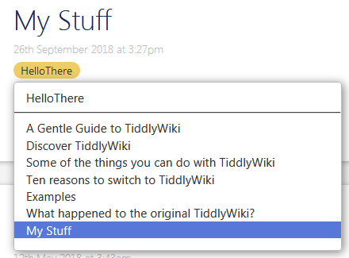
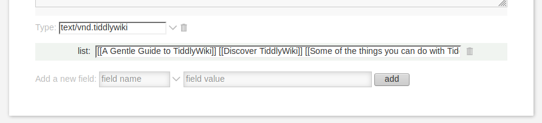
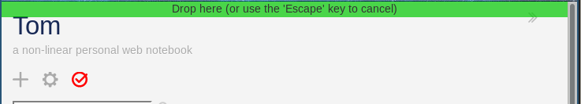
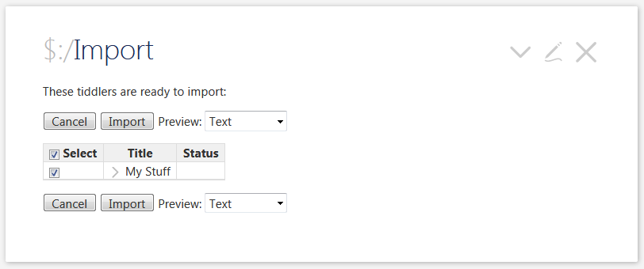
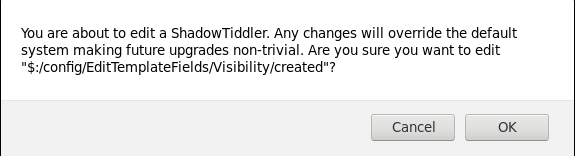
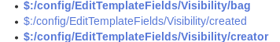

TiddlyWiki Jumpstart Tutorial
Table of Contents
- 1. TiddlyWiki Power User Tutorial
- 2. Variables & Friends: Your mileage may be variable
- 3. The transforming power of TRANSclusion
- 4. Become a power TiddlyWiki5 user with one Widget
- 5. Widget Wonderland
- 6. Topics in progress
1 TiddlyWiki Power User Tutorial
1.1 What you should know before you boldly go
1.1.1 Audience
First, this tutorial is about TiddlyWiki5, not the earlier, classic TiddlyWiki. From an automation standpoint, these two products are very different and can't share code, plugins, widgets, etc.
The assumption here is that you've already learned the basics, and are ready to up your game. You've figured out how to use or at least create tags and fields, and maybe have cast a covetous glance at lists. You've also figured out which of 20+ techniques you will be using to save your work.
1.1.2 Goals
In this tutorial, we're going to be learning about macros, variables, transclusions, the almighty list widget, a couple other widgets, and how to put them together in ways that will emulate the functionality you might expect from a full-blown database platform.
1.1.3 Expectations Reset
It's not your grandfather's programming language . In fact, it's questionable if the tools in TiddlyWiki5 qualify as a language at all. Instead, what you have in TiddlyWiki5 is an assortment of macros, variables, and widgets that allow you to weave together functionality that you would have to program if you were using a platform like MS Access®.
Some features look like traditional programming languages, but usage is different
When you see something like:
\define mymacro(stuff) My great $stuff$ goes here. <<variable>> \end
You could be forgiven for thinking, "Hey! I know what that is – it's a function or method just like in java/c++/c/python/fortran/<insert programming language here> !!"
But, it's not quite true – it's not a function, or a method. It's a macro which in turn is a type of pragma which is a special instruction to the TiddlyWiki core. The point here is to set aside any expectations that your previous experience with other programming environments may have created, and just keep an open mind. You'll need it.
1.2 Key Features of TiddlyWiki - an overview
Many of the topics we'l be covering require you to have an understanding of other topics, which we'll also be covering. This puts us in a classic chicken-and-egg situation? Which comes first? Colonel Sanders (tm) of course! But I digress. So we'll briefly give a high-level overview of key TiddlyWiki features before moving on to a more in-depth exploration.
1.2.1 Tag - you're it!
Tags are features of TiddlyWiki that allow you to add semantic and structural meaning to your tiddlers. Tags appear in the upper right corner of your tiddler in view mode as little button pills. Clicking on one of the pills reveals a drop-down list of all the items that that tag is used for tagging:

If you click, hold, and drag on one of the items in the pill's drop-down list, you can re-arrange the items. This will cause all other standard lists that use tags (the Table of Contents macros, for instance) to also rearrange. When this rearrangement happens, the order of the tagged tiddlers is stored in the list field of a tag pill's tiddler. That is, for instance, in the case shown, in the list field of the "HelloThere" tiddler.
Under the hood, each tiddler that is tagged has a hidden list field called "tags" that holds a list of the tags used by that tiddler.
Although tags are really just another kind of list field, the special visibility and abilities that are provided to them in the basic TiddlyWiki configuration gives them a special place of honor.
1.2.2 We're off to see the WikiText
WikiText is TiddlyWiki's own mark-up language. It's similar to the mark-up language of other Wiki-like systems (e.g. Wikipedia) and Mark-down, but has it's own syntax and some additional elements that give it additional powers. Some of the WikiText resembles modified HTML tags as well. So there's a mixture of things you'll see.
The downside is that you're going to need to learn yet another Wiki-like language (is it just me, or is there a new one every month?). The upside is that it's very similar to existing mark-up languages, provides additional powers, and there is an editor toolbar built into TiddlyWiki that can help in some cases when you're having trouble remembering the exact syntax.
1.2.3 Field of schemes
Fields are an important concept in TiddlyWiki. Most everything you see on screen is actually a field. The title is actually a field. Tags are kept in a type of list field. The contents of a tiddler are kept in a text field. There's also fields that you don't usually see like the created and modified fields.
If you scroll to a bottom of a typical tiddler opened for editing, you'll see something like this:
 At the very bottom is a place where you can create your own fields and input your own values. TiddlyWiki is pretty forgiving about what it takes to form a name, but for your own sanity you should restrict the names of fields you create to the standard lower-case alphabetic characters (a-z), the counting digits (0-9), and the special characters "_" (underscore) and "-" (hyphen).
1.2.4 Making a list
In the last example, you probably noticed the list field. The list field is actually just another field, but in certain contexts TiddlyWiki will deal with it in a special manner. In particular, if the title of a particular tiddler is also the name of a tag used in the TiddlyWiki file, then the contents of the list field will be used to store the order in which tiddlers will be displayed when you click on a tag button.
By default, operations in TiddlyWiki that require a list will expect the field name list, but there are multiple Widgets that can be given a different field name to use for list functions.
When you are making your own list fields each item in the field should be formed from contiguous characters with no spaces. Each item should be separated by any other items by a space. If your item requires spaces, then the entire item's contents should be enclosed in double square brackets. Like this:
[[A Gentle Guide to TiddlyWiki]]
1.2.5 Widget Spinner
Widgets are small bits of WikiText that resemble HTML mark-up tags, only they are always prefaced with a dollar sign ($) in their tag names. For example:
<$view ...>
or
<$list ...> <<currentTiddler>>, </$list>
When you use Widgets, you're likely going to need to refer to TiddlyWiki.com for additional documentation. A helpful hint is that the documentation for most Widgets can be found as the name of the tag (without the dollar sign) plus the word Widget. So if you were looking for the documentation for the "list" Widget, you would type "ListWidget" into the TiddlyWiki.com search box.
1.2.6 Variable Vun. Fun too.
Variables are special WikiText that can substitute text. In use, they take the form of a variable name inside of double angle brackets. Like:
<<myvariable>>
Variables and macros are actually the same thing under the hood, but usually created in different ways. But macros can accept parameters so might look like:
<<lookup "John">>
1.3 Key Concepts of TiddlyWiki
There are certain concepts that pop up in the TiddlyWiki forum and the documentation at TiddlyWiki.com, but may not be explained conveniently.
1.3.1 Old Man Story River
You'll sometimes see references to the Story River. The Story River is the set of tiddlers that appear on the left side of your browser tab or the entire tab if you've collapsed the side bars. The contents of the Story River appear in the list field of the $:/StoryList tiddler. Later you will discover techniques for manipulating lists, including the $:/StoryList.
1.3.2 Importing – what a drag
There are multiple ways of importing tiddlers and other content into your working TiddlyWiki file. But for the moment we'll look at drag & drop approach, which is generally the most intuitive.
You can drag all sorts of things into a TiddlyWiki file: Images, Tiddlers from other TiddlyWiki files, JSON files, or even entire TiddlyWiki files.
To import a tiddler from one TiddlyWiki to another, open both TiddlyWikis in separate browser tabs. Lets call them "Tom" and "Ray". Open the tiddler you want to import in "Ray". From the "Open" menu in the sidebar, find the tiddler you want to import. Click and hold on the link. Still holding, drag it over the tab of the "Tom" TiddlyWiki file so that it opens and assumes focus. Drag the link to the top of the "Tom" TiddlyWiki file and a green bar will appear:

Release the mouse button and an import dialog will appear:

Click the Import button to import your tiddler or Cancel if you've changed your mind.
The same technique works for dragging and dropping files into your tiddler. How TiddlyWiki handles this will depend on the nature of the file that you drop. You can, for instance drag and drop images and they will be embedded into your TiddlyWiki file. The danger with images, or other file objects such as PDF documents, is that they will take up as much, or more space, as the original file. This can quickly make your TiddlyWiki file become unstable. When you have large documents that you want to associate with TiddlyWiki, it's generally best to embed them as external files.
1.3.3 Shadows, Plugins, and System Tiddlers
In the TiddlyWiki forum and at TiddlyWiki.com you will often seen references to plugins, shadow tiddlers, and system tiddlers. These terms may seem confusing at times.
A plugin is a special tiddler that typically contains other tiddlers that allow it to add features and abilities to your current TiddlyWiki file. You can see the list of plugins currently installed in your TiddlyWiki instance by clicking on the "cog" icon to open the control panel. Then select the Plugins tab. If you go to TiddlyWiki.com and navigate to its Plugins tab, you can then click on the "Get more plugins" button and see a list of more than 50 plugins available to load. After you have installed one of the tiddlers on the instance at TiddlyWiki.com, you can then drag and drop it into your own TiddlyWiki instance following the drag/drop importing instructions mentioned previously. Note that you have to save and reload your TiddlyWiki file before the new plugin takes effect.
You can also drag and drop plugins that you've found on other TiddlyWiki sites or in the TiddlyWiki forum.
Plugins typically contain other tiddlers. These are typically manifested as Shadow tiddlers. If you go to TiddlyWiki.com, click on the cog (control panel), the plugin tab, and then click on the TiddlyWiki5 core, a tiddler with the title $:/core will open. Click on the Contents tab and you will see a list of tiddlers. Note that all the tiddlers are highlighted in bold. What does that mean? Links to tiddlers that presented in bold text mean that the tiddler is a Shadow tiddler. The Shadow tiddler doesn't really exist as an independent tiddler – it's embedded in the plugin tiddler. But if you click on one of these Shadow tiddler links, say $:/config/EditTemplateFields/Visibility/created, it will open up the tiddler just as if it were an ordinary tiddler. Except that if you attempt to edit the tiddler you will get a warning that you are about to edit a Shadow tiddler.

Note that the warning is about how editing Shadow tiddlers can make future upgrades difficult. This does not mean that editing a Shadow tiddler is dangerous in and of itself. In fact, it's very reversible.
For instance, try editing $:/config/EditTemplateFields/Visibility/created, changing the value from "hide" to show. Close the tiddler. Now when you edit any tiddler the value of the created date will appear at the bottom along with the other fields. Now go back to the contents tab and scan for the $:/config/EditTemplateFields/Visibility/created tiddler. Notice that its link is no longer in bold:

Internally what has happened is that the "shadow" tiddler has been replaced by a "real" tiddler, and now the link to the tiddler will display in normal font darkness.
But what if you want to go back to the way things were?
Go back to the edited $:/config/EditTemplateFields/Visibility/created tiddler. Delete it. Now go back to the contents tab of the $:/core/ plugin tiddler and scroll down to view the $:/config/EditTemplateFields/Visibility/created tiddler link. It will be restored to bold font.
System tiddlers are tiddlers whose title starts with "$". Really, that's all. But wait! There's more! The TiddlyWiki system treats system tiddlers in special ways. In particular, they are hidden from the "recent" tab in the right-hand sidebar. There are also additional TiddlyWiki filter operators for processing system tiddlers.
2 Variables & Friends: Your mileage may be variable
2.1 Macros are variables
The first topic to understand in your voyage to the world of TiddlyWiki power computing, is that of macros. And the first thing to understand about macros is that they are actually the same as TiddlyWiki variables.
You might think that variables and macros are the same thing, but actually in TiddlyWiki5 Macros are just variables that take a parameter. Hey they, even look alike:
Internally, macros and variables are the same thing. Macros can take a parameter, and then use it inside it's definition to put pieces of text together. And that's it! Macro's aren't like functions or methods – they can't actually invoke something else (though they may create the illusion that they do). In fact, the two main thing's that macro's do is provide a way to bundle WikiText together and allow pieces of text to be put together (called concatenation).
<<mymacro "call me sometime">> <<Variable>>
2.2 Variables vs. Parameters
In some languages, there's a thin line between variables and parameters. In TiddlyWiki5, the difference Is a bit more conspicuous.
Your typical macro definition (see Definitions in WikiText for a detailed explanation of macro definitions) will look something like:
\define pressrelease(johndoe) $johndoe$ is a wonderful guy
In this brief, but important example, johndoe is a placeholder carrying the name of someone about whom we are reporting (pretend you're a publicity agent). When invoked, the term $johndoe$ will be substituted for text passed in the johndoe parameter. So, for instance, if we invoked it like:
<<pressrelease 'Tony'>>
then the macro would be rendered as:
Tony is a wonderful guy
The first thing to notice is that all this code did was to substitute Tony for $johndoe$. In fact, the only superpower that macros give you is text substitution.
This example was a bit too easy. Often you don't know the value of a parameter in advance. In fact, more times than not, it's easier to pass information into a macro in the form of a variable. So let's detour to talk a bit about variables. Let's say that we want to pass the value 'Tony' to our macro as a variable instead of as a parameter. This time our macro definition might look like:
\define pressrelease() $(johndoe)$ is a wonderful guy.
Notice that there is now no parameter, and the the variable has two parentheses inside of the dollar signs. It's still doing text substitution, but now the text is coming from a variable defined outside of the macro. Which leaves the question, "How was the variable defined?" So let's now look a little more at variables.
\define mymacro(myparam) I have this to say about $param$ \end
There's also two very different ways that external variables are used inside of macros.
The first is the standard way that you can call a variable (or a macro) anywhere:
<<myvariable>>
But inside a macro definition you also have available another way to reference a variable:
$(myvariable)$
So, why would you want to use this second form? The second form inserts the variable as a string wherever its equivalent placeholder appears. A placeholder is the name of the variable enclosed within dollar symbols and parentheses (e.g. \((variable)\)). This allows you to insert it as though it was typed right into the text. We'll see how this can be useful in the next couple of sections. But let's first look at how variables are created.
2.3 Creating variables
We said that macros are just a type of variable. But that might leave you wondering when and how to use variables. There are many ways that variables can be defined, but most (all?) of them involve using TiddlyWiki *widgets*.
We have a lot to say about widgets, especially the `<$list>` widget, but for now let's look at one of the most direct means of setting variables – the `<$set>` widget.
2.3.1 Ready, SET, go
The <$set> widget can be used to set a variable for a certain lexicographical space. That just means that it sets a variable that is only in effect for a certain part of your code. Like this:
<$set name="johndoe" value="Tony"> <<johndoe>> </$set>
If you run this (type it into a tiddler) what you'll see is:
Tony
So what's going on? The <$set> widget is setting a variable called johndoe to the value Tony. This variable will only be in effect between the <$set>...</$set> widget tags – including for any macros that are called between them. The WikiText syntax <<variable>> renders the value of the specified variable, so in this case <<johndoe>> displays Tony. That's pretty neat, but the real power comes when you derive the value of the variable from some other, non-static source. If you created a tiddler, "Person", and typed in "Jeremy Ruston" as the text, then you could create your <$set> widget environment like this:
<$set name="johndoe" value={{Person}}>
<<johndoe>>
</$set>
and the results would appear as:
Jeremy Ruston
If the {{Person}} construction is new to you, don't worry. That's called transclusion, a powerful WikiText construction that allows you to fetch values from tiddlers and fields. We'll be learning about transclusion in the next section. In this case, the value for the variable is being set to the text field value of the Person tiddler.
2.3.2 Using variables for concatenation
As we mentioned previously (Macros are variables ), the only thing that macros actually do is to combine variables or parameters with text. This means they are more limited than program functions that they may appear to emulate. But they are ideal for concatenating text.
Here's a typical situation. Let's say you want to use the value of a tiddler in the current tiddler as the name for a link using the "pretty link" syntax. You might think you could combine the transclusion that we just met like this:
[[{{Person}}]]
But if you try this, you'll just see the literal text {{Person}} displayed on screen as a link. If you click on it, it will take you to a (likely) non-existent tiddler "{{!!mylink}}".
So how to fix this?
What we want to do is to "glue" the result of the transclusion {{Person}} into the the link structure [[Name-of-person]]. This gluing process is also known as concatenation, which is what TiddlyWiki macros are good for. So we could make a macro like this:
\define link-person() [[$(person-variable)$]]
and invoke it like this:
<$set name="person-variable" value={{Person}}>
<<link-person>>
</$set>
If the Person tiddler contains the name "Tony", then a link will be created to a tiddler "Tony". Of course, just because there is a link doesn't mean that the tiddler exists.
So, how does this work? The value of the text field of tiddler "Person" is passed to a variable, "person-variable" created by the <$set> widget. Then, inside the link-person macro the value of the variable person-variable is swapped into it's placeholder, $(person-variable)$ – as text. This effectively stitches together (or (concatenats) ) the text to form a link to "Tony".
4 Become a power TiddlyWiki5 user with one Widget
If you were stranded on a dessert island (say, the Chiffon isles), and could only take one Widget with you, which would it be? The answer is quite clear. Darryl Hanna. No, wait, wrong question, and I'm dating myself. It would be the <$list> widget, the Swiss army knife of TiddlyWiki5 functionality that even the Swiss are jealous of.
4.1 Filters
What gives the <$list> widget its superpowers is primarily the filter attribute. Learning how to use filters properly is the key to … well just about everything.
A typical use of filter inside the <$list> widget might look something like:
<$list filter="[tag[HelloThere]]"/>
This might give, if you ran it at TiddlyWiki.com, a list of tiddlers that are tagged "HelloThere".
4.1.1 Spacing in filters.
But, if you try this example, you'll see that the list of tiddlers are all run together, making them difficult to read. So you might want to set up the format with the full double-tag method:
<$list filter="[tag[HelloThere]]"/> </$list>
But if you try this, you will be surprised to see that there is no content output at all!
Let's slow down and take a look at the standard List Widget deployment, because there's a few "gotchas" to pay attention to.
5 Widget Wonderland
A run-down on other frequently used widgets and when they might be useful
6 Topics in progress
You won't be working long in TiddlyWiki5 before you encounter certain problems. Here's some common ones and their workarounds.
6.1 How do I pass a the output of a macro to another macro?
It's often the situation that you want the output of one macro to become the input of another macro. You might imagine that you could do something like:
Sadly, this won't work. The "<<>>" encoding is interpreted by the TiddlyWiki5 parser, and it doesn't know what to do with all those embedded angle brackets. But, fortunately, there's another way to call macros. You can use the <$macrocall> widget.
6.2 Making count down lists
6.4 Template tiddlers (Knights Template)
This is the whirlwind overview of using templates.
Let's say you have a tiddler with some fields:
image_url: simian.jpg terrain: any intelligence: 11 matrix: 3x3
Then you might set up a template tiddler, TEMPLATE that uses these fields:
<image src={{!!image_url}} float="left"/>
<table>
<tr>
<td>Terrain</td><td>{{!!terrain}}</td>
</tr><tr>
<td>Intelligence</td><td>{{!!intelligence}}</td>
</tr><tr>
<td>Matrix</td><td>{{!!matrix}}</td>
</tr>
</table>
Then let's say that all these (avatar?) tiddlers have something to identify them, like tag "Avatar".
Then you can make a tiddler, tag it with $:/tags/ViewTemplate, with contents:
<$list filter="[all[current]]">
{{||TEMPLATE}}
</$list>
And each tiddler tagged with Avatar will present your formatted data.
A general tip about database fields is that they should always only represent one thing. For instance, an intelligence field of 11-15 will be hard to parse and compare with other avatars because it has a range. So if you ever expect to want to compare intelligence values you should have intelligencelow and intelligencehigh, or "intelligence" and "intelligencerange".
There's a lot more to say about templates and their use in TW5, but as I said, that's the whirlwind version.